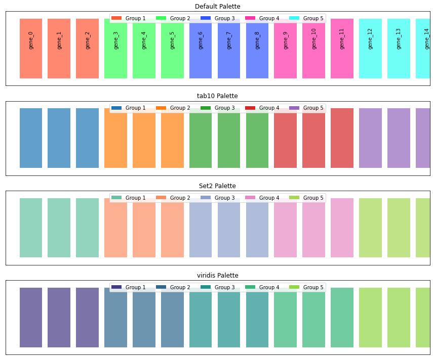

# Example usage with different palette options
def demonstrate_group_mapping_palettes():
# Create a list of items
items = [f'gene_{i}' for i in range(15)]
# Create a figure with multiple palette examples
fig, axes = plt.subplots(4, 1, figsize=(12, 10))
# Example 1: Default palette
color_map1, group_map1 = create_group_color_mapping(
items, group_size=3, return_color_to_group=True
)
# Example 2: tab10 palette
color_map2, group_map2 = create_group_color_mapping(
items, group_size=3, palette_name='tab10', return_color_to_group=True
)
# Example 3: Set2 palette
color_map3, group_map3 = create_group_color_mapping(
items, group_size=3, palette_name='Set2', return_color_to_group=True
)
# Example 4: viridis palette
color_map4, group_map4 = create_group_color_mapping(
items, group_size=3, palette_name='viridis', return_color_to_group=True
)
# Plot all examples
palettes = [
('Default Palette', color_map1, group_map1),
('tab10 Palette', color_map2, group_map2),
('Set2 Palette', color_map3, group_map3),
('viridis Palette', color_map4, group_map4)
]
for i, (title, color_map, group_map) in enumerate(palettes):
ax = axes[i]
# Plot bars
for j, item in enumerate(items):
ax.barh(0, 0.8, left=j, height=0.8, color=color_map[item], alpha=0.7)
if i == 0: # Only add labels on the first plot
ax.text(j+0.4, 0, item, rotation=90, ha='center', va='bottom')
# Add legend
legend_elements = [Patch(facecolor=color, label=group) for color, group in group_map.items()]
ax.legend(handles=legend_elements, loc='upper center', ncol=len(group_map))
ax.set_ylim(-0.5, 0.5)
ax.set_xlim(-0.5, len(items) - 0.5)
ax.set_yticks([])
ax.set_xticks([])
ax.set_title(title)
plt.tight_layout()
# Print example of hex colors from tab10
print("Example hex colors from tab10 palette:")
for color in list(group_map2.keys())[:5]:
print(color)
return fig, axesSemi Random Collection of functions
/opt/hostedtoolcache/Python/3.10.16/x64/lib/python3.10/site-packages/fastcore/docscrape.py:230: UserWarning: Unknown section Parameters:
else: warn(msg)
/opt/hostedtoolcache/Python/3.10.16/x64/lib/python3.10/site-packages/fastcore/docscrape.py:230: UserWarning: Unknown section Returns:
else: warn(msg)convert_palette_to_hex
convert_palette_to_hex (palette_name, n_colors)
Convert a named color palette to hex color codes.
create_group_color_mapping
create_group_color_mapping (items, group_size=3, palette=None, palette_name=None, return_color_to_group=False)
Create a color mapping dictionary that assigns the same color to items in groups.
demonstrate_group_mapping_palettes()Example hex colors from tab10 palette:
#1f77b4
#ff7f0e
#2ca02c
#d62728
#9467bd(<Figure size 864x720 with 4 Axes>,
array([<AxesSubplot:title={'center':'Default Palette'}>,
<AxesSubplot:title={'center':'tab10 Palette'}>,
<AxesSubplot:title={'center':'Set2 Palette'}>,
<AxesSubplot:title={'center':'viridis Palette'}>], dtype=object))
norm_loading_TMT
norm_loading_TMT (df)
quantileNormalize
quantileNormalize (df_input, keep_na=True)
norm_loading
norm_loading (df)
normalization loading for the columns of a dataframe the columns shuld be comparable (ie do not mix fractionated samples, for example cytosolic and extracellulars)
ires_norm
ires_norm (df, exps_columns)
implement IRES norm for TMT example irs_df = ires_norm(df.replace(0,np.nan).fillna(df.mean()),[tmt10, tmt6]) remember to set nan again after norm irs_df[df.replace(0,np.nan).isna()]=np.nan
clean_id
clean_id (temp_id)
hist_legend
hist_legend (ax, title=False)
add_desc
add_desc (data, prot_to_desc)
parse_fasta_file
parse_fasta_file (fasta_file)
create a dictionary of protein id to gene product using fasta file from tritrypDB
get_scaled_df
get_scaled_df (df)